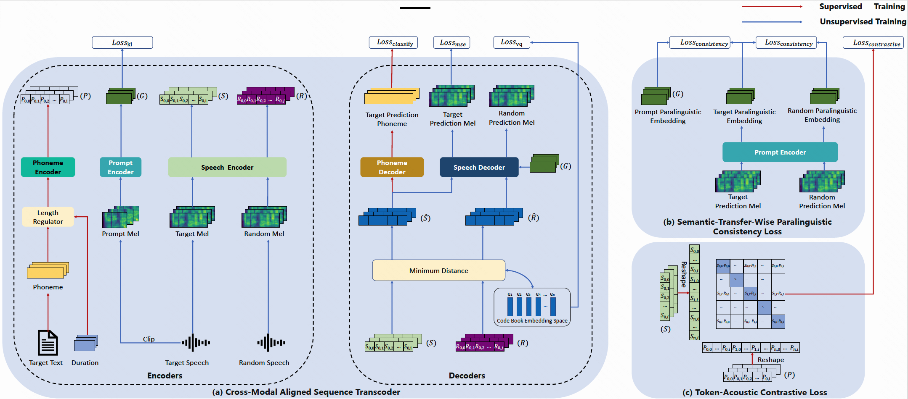
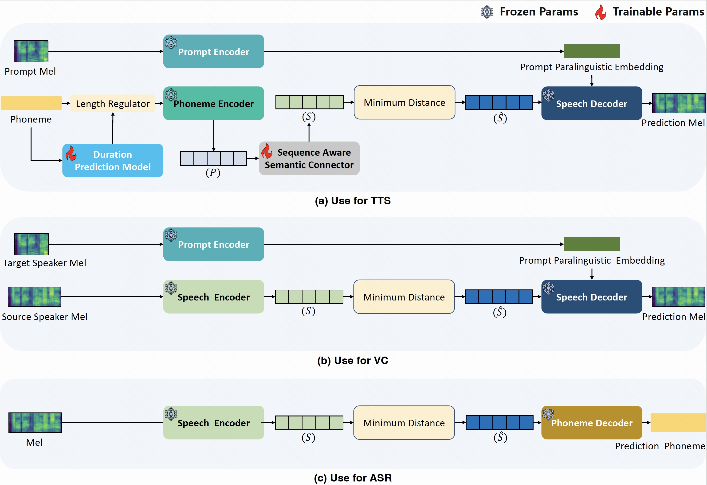
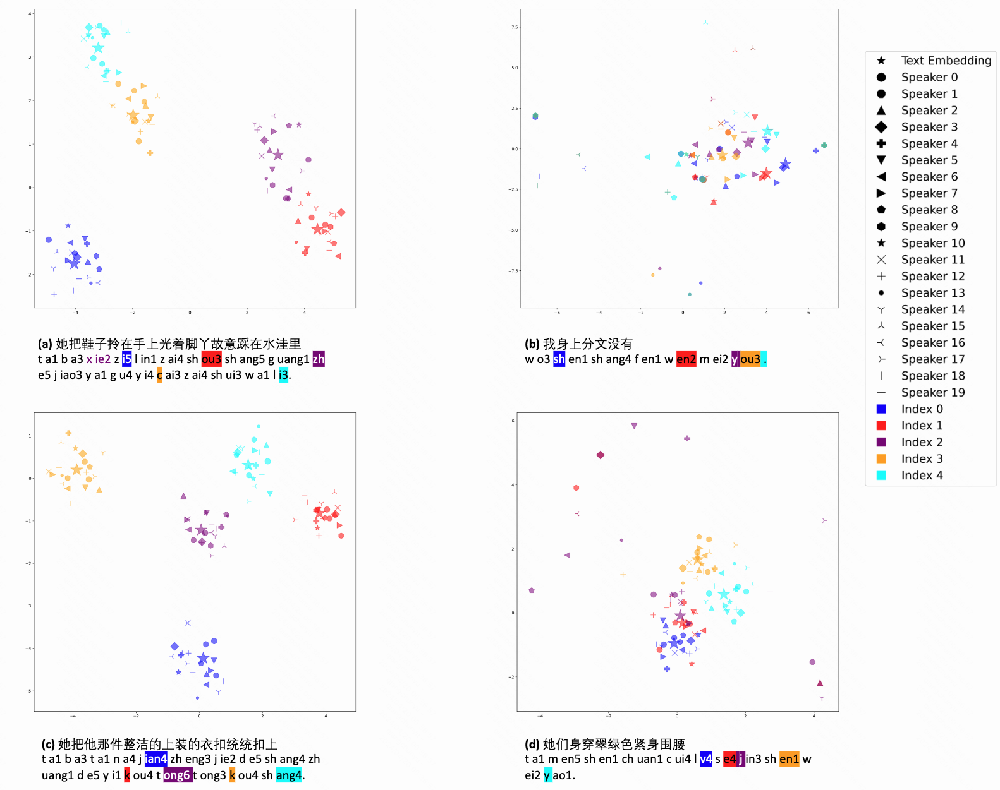
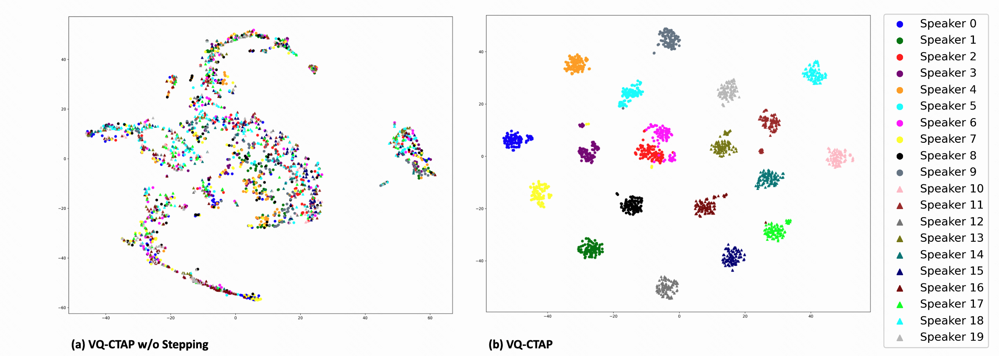
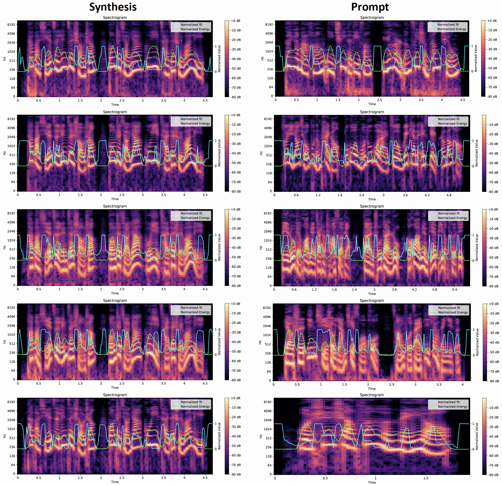

VQ-CTAP: Cross-Modal Fine-Grained Sequence Representation Learning for Speech Processing
Chunyu Qiang, Wang Geng, Yi Zhao, Ruibo Fu, Tao Wang, Cheng Gong, Tianrui Wang, Qiuyu Liu, Jiangyan Yi, Zhengqi Wen, Chen Zhang, Hao Che, Longbiao Wang, Jianwu Dang, Jianhua Tao
Tianjin University, Tianjin, China
Kuaishou Technology Co., Ltd, Beijing, China
Institute of Automation, Chinese Academy of Sciences, Beijing, China
Migu Culture Technology Co., Ltd., Beijing, China
Tsinghua University, Beijing, China
Abstract
Deep learning has brought significant improvements to the field of cross-modal representation learning. For tasks such as text-to-speech (TTS), voice conversion (VC), and automatic speech recognition (ASR), a cross-modal fine-grained (frame-level) sequence representation is desired, emphasizing the semantic content of the text modality while de-emphasizing the paralinguistic information of the speech modality. We propose a method called "Vector Quantized Contrastive Token-Acoustic Pre-training (VQ-CTAP)", which uses the cross-modal aligned sequence transcoder to bring text and speech into a joint multimodal space, learning how to connect text and speech at the frame level. The proposed VQ-CTAP is a paradigm for cross-modal sequence representation learning, offering a promising solution for fine-grained generation and recognition tasks in speech processing. The VQ-CTAP can be directly applied to VC and ASR tasks without fine-tuning or additional structures. We propose a sequence-aware semantic connector, which connects multiple frozen pre-trained modules for the TTS task, exhibiting a plug-and-play capability. We design a stepping optimization strategy to ensure effective model convergence by gradually injecting and adjusting the influence of various loss components. Furthermore, we propose a semantic-transfer-wise paralinguistic consistency loss to enhance representational capabilities, allowing the model to better generalize to unseen data and capture the nuances of paralinguistic information. In addition, VQ-CTAP achieves high-compression speech coding at a rate of 25Hz from 24kHz input waveforms, which is a 960-fold reduction in the sampling rate.
Experiment
Experiment Details:
This page shows the samples in the paper "VQ-CTAP: Cross-Modal Fine-Grained Sequence Representation Learning for Speech Processing".
For the labeled text-speech paired data, we integrate our internal dataset with the AISHELL-3 dataset and the LibriTTS dataset, resulting in a combined total of 900 hours of recordings from 3000 speakers.
For unlabeled speech-only data, we utilize 20,000 hours of speech crawled from the internet, primarily sourced from audiobooks, podcasts, and online videos.
All test samples and speakers have not appeared in the training set and validation set.
Model Architecture

The core component of VQ-CTAP is the cross-modal aligned sequence transcoder, which jointly trains three encoders and two decoders. It extracts phoneme embedding (P) from the target text, target speech embedding (S) and prompt paralinguistic embedding (G) from the target speech, as well as random speech embedding (R) from the random speech. The (P) and (S) are used to construct token-acoustic contrastive loss, which learns frame-level (dis)similarity between a batch of speech-text pairs. Additionally, two decoders are adapted for downstream tasks such as TTS, ASR, and VC. To enable enhanced representation learning, unlabeled random speech is used to calculate semantic-transfer-wise paralinguistic consistency loss.
Plug-and-Play for Downstream Tasks

The pre-trained VQ-CTAP is used for downstream TTS, VC and ASR tasks.
To demonstrate the model's capabilities for downstream frame-level tasks, we evaluated its performance on TTS, VC, and ASR.
On this demo page, the methods that can be used for the TTS, VC and ASR tasks are shown: Wav2Vec2.0, Hubert, CTAP and VQ-CTAP (proposed).
Note that, to ensure fairness, the TTS, VC and ASR systems differ only in their intermediate semantic coding (the representations extracted by these models), while the remaining structures are identical and trained using the same dataset. The same duration prediction model is also used.
TTS Demos
Text
Prompt
Wav2Vec2.0
Hubert
CTAP
VQ-CTAP(proposed)
你只需要像这样坐着，弯腰然后深呼吸。
这儿夏天雨水很多。可是秋天很少雨。
罗林马泽尔。他表现得非常出色。
是啊，而且司机中英文都不会说，
这次选择了静安香格里拉的premier king room。
古时也有青梅煮酒论英雄的典故。
美国关节炎与风湿病杂志刊登研究称。
二十二岁因在江湖恩仇录中出演娇娇一角而入行。
认真谋划周密安排、分工负责、加快推进。
清明假期，全国铁路发送旅客五千四百万人次。
分国家战略、聚焦精准、合力攻坚。
用球杆打白球，白球打到彩球。你要把彩球打进洞里。
这次选择了静安香格里拉的premier king room。
那是我精通的事，你要举办派对，绝对少不了我。
田园蔬菜粥不错呀，爱护环境人人有责。
我猜他抢的太凶，裁判判罚主队。
而这次图片的发布时间，同样是在周末晚上的二十二点三十分。
小白一边哭，一边用拳头砸额头。
哦，你喜欢上谁了，你若安好，便是晴天。
这儿夏天雨水很多。可是秋天很少雨。
我真不敢相信与客户共进午餐时，竟然忘了带钱包。
别啊！至少再喝一杯，以表送行。
我目前是一家外企的业务员。
我打电话请病假了。
张恒偶尔有所不懂的地方李建国也一一给予解答
距离翱翔紫禁场馆约一百米距离
应龙也在前面开路用尾巴划地
鱼子酱是好几样side dishes可以自己搭配的。
VC Demos
Source Speech
Text: 她把鞋子拎在手上光着脚丫故意踩在水洼里。
Prompt (Target Speaker)
Wav2Vec2.0
Hubert
CTAP
VQ-CTAP(proposed)
Source Speech
Text: 我身上分文没有
Prompt (Target Speaker)
Wav2Vec2.0
Hubert
CTAP
VQ-CTAP(proposed)
Source Speech
Text: 她把他那件整洁的上装的衣扣统统扣上
Prompt (Target Speaker)
Wav2Vec2.0
Hubert
CTAP
VQ-CTAP(proposed)
t-SNE plot of phoneme/speech embedding for 20 speakers

To showcase the paralinguistic independence of VQ-CTAP's semantic coding, we synthesize four texts using prompts from 20 speakers, ensuring consistency across different speakers. Speech representation S is extracted using VQ-CTAP's speech encoder, while phoneme representation P is extracted using the phoneme encoder. The alignment between these two representations at the frame level is expected, with S devoid of speaker information. Using t-SNE, we compress P and S for each frame into 2-dimensional vectors, visualized in Figure. Here, $\bigstar$ represents P, while other shapes represent S for different speakers, with colors indicating corresponding positions of P and S. Figures(a) and (c) reveal close Euclidean distances between S of different speakers and their corresponding P, demonstrating VQ-CTAP's ability to extract speech representation (semantic coding) while removing paralinguistic information and aligning it with the text modality. Notably, despite variations in position, the corresponding P and S for the red and orange phonemes "k" in Figure(c) remain untangled, underscoring VQ-CTAP's context-dependent representation, consistent with the token-acoustic contrastive loss motivation. The clustering effect in shorter sentences (b) and (d) of Figure is not as pronounced as in longer sentences (a) and (c), further confirming VQ-CTAP's context modeling characteristic.
t-SNE plot of prompt paralinguistic embedding for 20 speakers with 100 sentences each

We randomly select 2000 utterances from 20 speakers and utilize VQ-CTAP's prompt encoder to extract prompt paralinguistic embeddings, compressing them into 2-dimensional vectors using t-SNE, as depicted in Figure. The scattered distribution in Figure(a) suggests that the prompt encoder struggles to model timbre without the stepping optimization strategy. Conversely, the prompt paralinguistic embeddings extracted by VQ-CTAP exhibit clear boundaries between different speakers, showcasing the prompt encoder's timbre modeling capability.
The Spectrograms, F0, and Energy of synthesized speech (the same semantic coding combining different prompts). The bottom row is the ground-truth.

Figure shows the spectrograms, F0, and energy of the VC output speech generated by VQ-CTAP using the same semantic coding combined with different prompts. The synthesized speech exhibits strong alignment with the prompt speech in terms of spectrogram across multiple frequency domains, F0, and energy, benefiting from the characteristic of semantic-paralinguistic decoupling of the speech encoder in VQ-CTAP and the ability to extract paralinguistic information of the prompt encoder.